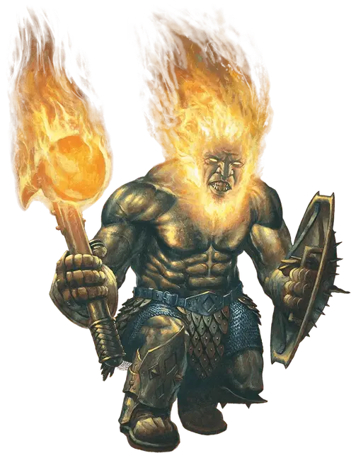

Эйзер
Azer
Средний Элементаль, законно-нейтральный

Класс Доспеха 17 (природный доспех, щит)
Хиты 39 (6к8 + 12)
Скорость 30 футов
| мод | спас | ||
|---|---|---|---|
| СИЛ | 17 | +3 | +3 |
| ЛОВ | 12 | +1 | +1 |
| ТЕЛ | 15 | +2 | +4 |
| мод | спас | ||
|---|---|---|---|
| ИНТ | 12 | +1 | +1 |
| МДР | 13 | +1 | +1 |
| ХАР | 10 | +0 | +0 |
Иммунитет к урону огонь, яд
Иммунитет к состояниям отравление
Чувства пассивное Восприятие 11
Языки Игнан
Опасность 2 (450 опыта)
Бонус мастерства +2
Особенности
Раскаленное тело. Существо, касающееся эйзера или попадающее по нему рукопашной атакой, находясь в пределах 5 футов от него, получает урон огнём 5 (1к10).
Раскаленное оружие. Если эйзер попадает металлическим рукопашным оружием, он причиняет дополнительный урон огнём 3 (1к6) (уже учтено в атаках).
Свечение. Эйзер испускает яркий свет в радиусе 10 футов и тусклый свет в пределах ещё 10 футов.
Действия
Боевой молот. Рукопашная атака оружием: +5 к попаданию, досягаемость 5 футов, одна цель. Попадание: Дробящий урон 7 (1к8 + 3), или дробящий урон 8 (1к10 + 3), если используется двумя руками для совершения рукопашной атаки, плюс урон огнём 3 (1к6).
Описание
Эйзеры, уроженцы Стихийного Плана Огня, это мастера-ремесленники, опытные шахтеры и заклятые враги ифритов. И внешне и по манере поведения эйзеры похожи на мужчин дварфов, но только лишь внешне. Под выглядящей как металл кожей эйзеров бьется огонь, который внешне заметен лишь по их огненным волосам и бороде.
Созданные, не рожденные. Эйзеры не размножаются. Каждый из них изготовлен из бронзы другим эйзером и наполнен внутренним огнём создателя. Каждый эйзер внешне уникален. Все это ограничивает рост популяции эйзеров и является основной причиной того, что эти существа остаются редкими.
Вулканические жители. Эйзеры живут в королевстве на границе между Стихийным Планом Земли и Стихийным Планом Огня, в области гор и вулканов, чьи пики возвышаются как ряд крепостей. Под горными пиками, под вулканическими жерлами, среди рек магмы, эйзеры добывают металлы и драгоценные камни. Отряды эйзеров патрулируют проходы и туннели своего царства, отражая набеги саламандр, атакующих царство эйзеров по приказу своих хозяев, ифритов.
Враги ифритов. Давным-давно эйзеры и ифриты были союзниками. Эйзеры помогли ифритам создать Латунный город, превратив его в одно из самых удивительных рукотворных мест. Когда эйзеры закончили свою работу, ифриты предали их, предприняв попытку поработить эйзеров, чтобы сохранить секреты города. Несмотря на отдельные налеты и стычки, обе стороны пока воздерживаются от полномасштабного конфликта. Эйзеры полагают, что только угроза раскрыть секреты тайных путей в Латунный город сдерживает ифритов.
Мастера металла и драгоценных камней. Эйзеры — умелые ремесленники, создающие прекрасные работы из самоцветов и драгоценных металлов, которые они добывают на своей вулканической родине. Они ценят эти сокровища выше всех других вещей. Иногда, в поисках редких металлов и самоцветов, они отправляются на другие планы.
Когда, при помощи магии, эйзера призывают на Материальный План, обычно это делается для создания сложного магического предмета или произведения искусства, так как считается, что их умению в подобных вещах нет равных.
Живой огонь. Эйзер не нуждается в еде, питье и сне.